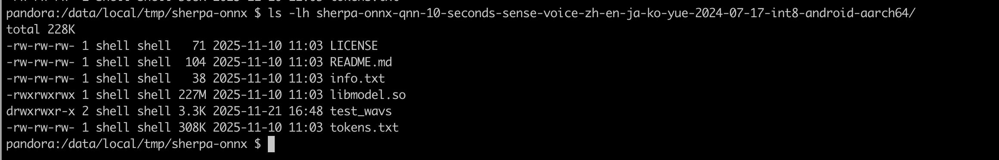
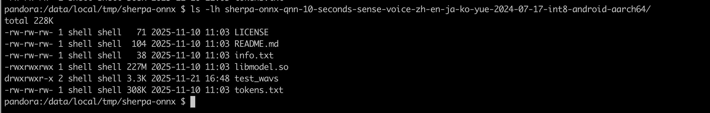

Run executables on your phone with adb (using libmodel.so)
In Build sherpa-onnx for Qualcomm NPU, we have described how to generate
executable files. This section describes how to run them with QNN models (libmodel.so) on your
phone with adb.
Hint
libmodel.so is OS-dependent, QNN-SDK-independent, but SoC-independent.
OS-dependent: a
libmodel.sobuilt for Android/arm64 cannot run on Linux/arm64, and vice-versa.QNN-SDK-independent: Once built,
libmodel.sodoes not depend on the version of the QNN SDK installed on the target device.SoC-independent: the same
libmodel.socan run on multiple Qualcomm chips such as SM8850, SA8259, QCS9100, and others.
The trade-off is that the first-run initialization is slow, because the context has to be generated at runtime.
If you want faster startup, use an SoC-specific but OS-independent context binary (model.bin).
For guidance, see Run executables on your phone with adb (using model.bin).
Feature |
libmodel.so |
model.bin |
|---|---|---|
OS Dependency |
OS-dependent: cannot run across
different OS/arch
(e.g., Android/arm64
vs Linux/arm64)
|
OS-independent: can run on
multiple OS/arch
(e.g., Android/arm64
and Linux/arm64)
|
SoC Dependency |
SoC-independent: can run
on multiple Qualcomm chips
(e.g., SM8850, SA8259, QCS9100)
|
SoC-dependent: built for
a specific chip;
cannot run on a different SoC
|
QNN-SDK Dependency |
QNN-SDK-independent: works
with any QNN SDK version
|
QNN-SDK-dependent: depends
on the QNN SDK version
used to build it
|
First-Run Initialization |
Slow: context must be
generated at runtime
|
Fast: context is
pre-generated
|
Recommended Use |
When SoC-independence or
SDK-independence is needed
|
When fastest startup is required |
Note: Choose libmodel.so if you need flexibility across SoCs or
QNN SDK versions. Use model.bin if you want the fastest possible
first-run initialization on a specific SoC.
Download a QNN model
You can find available QNN models (libmodel.so) at
Hint
For model.bin, please see
Since QNN does not support dynamic input shapes, we limit the maximum duration the model can handle. For example, if the limit is 10 seconds, any input shorter than 10 seconds will be padded to 10 seconds, and inputs longer than 10 seconds will be truncated to that length.
The model name indicates the maximum duration the model can handle.
Caution
Please select a model with name -android-aarch64.
We use sherpa-onnx-qnn-10-seconds-sense-voice-zh-en-ja-ko-yue-2024-07-17-int8-android-aarch64.tar.bz2
as an example below:
wget https://github.com/k2-fsa/sherpa-onnx/releases/download/asr-models-qnn/sherpa-onnx-qnn-10-seconds-sense-voice-zh-en-ja-ko-yue-2024-07-17-int8-android-aarch64.tar.bz2
tar xvf sherpa-onnx-qnn-10-seconds-sense-voice-zh-en-ja-ko-yue-2024-07-17-int8-android-aarch64.tar.bz2
rm sherpa-onnx-qnn-10-seconds-sense-voice-zh-en-ja-ko-yue-2024-07-17-int8-android-aarch64.tar.bz2
You should see the following files:
ls -lh sherpa-onnx-qnn-10-seconds-sense-voice-zh-en-ja-ko-yue-2024-07-17-int8-android-aarch64/
total 492592
-rw-r--r--@ 1 fangjun staff 38B 10 Nov 11:03 info.txt
-rwxr-xr-x@ 1 fangjun staff 227M 10 Nov 11:03 libmodel.so
-rw-r--r--@ 1 fangjun staff 71B 10 Nov 11:03 LICENSE
-rw-r--r--@ 1 fangjun staff 104B 10 Nov 11:03 README.md
drwxr-xr-x@ 7 fangjun staff 224B 21 Nov 16:42 test_wavs
-rw-r--r--@ 1 fangjun staff 308K 10 Nov 11:03 tokens.txt
Copy files to your phone
We assume you put files in the directory /data/local/tmp/sherpa-onnx on your phone.
# Run on your computer
adb shell mkdir /data/local/tmp/sherpa-onnx
Copy model files
# Run on your computer
adb push ./sherpa-onnx-qnn-10-seconds-sense-voice-zh-en-ja-ko-yue-2024-07-17-int8-android-aarch64 /data/local/tmp/sherpa-onnx/
Copy sherpa-onnx executable files
# Run on your computer
adb push ./build-android-arm64-v8a/install/bin/sherpa-onnx-offline /data/local/tmp/sherpa-onnx/
Copy sherpa-onnx library files
# Run on your computer
adb push ./build-android-arm64-v8a/install/lib/libonnxruntime.so /data/local/tmp/sherpa-onnx/
Hint
You don’t need to copy libsherpa-onnx-jni.so in this case.
Copy QNN library files
Before you continue, we assume you have followed Download QNN SDK
to download QNN SDK and set up the environment variable QNN_SDK_ROOT.
You should run:
echo $QNN_SDK_ROOT
to check that it points to the QNN SDK directory.
# Run on your computer
adb push $QNN_SDK_ROOT/lib/aarch64-android/libQnnHtp.so /data/local/tmp/sherpa-onnx/
adb push $QNN_SDK_ROOT/lib/aarch64-android/libQnnHtpPrepare.so /data/local/tmp/sherpa-onnx/
adb push $QNN_SDK_ROOT/lib/aarch64-android/libQnnSystem.so /data/local/tmp/sherpa-onnx/
adb push $QNN_SDK_ROOT/lib/aarch64-android/libQnnHtpV68Stub.so /data/local/tmp/sherpa-onnx/
adb push $QNN_SDK_ROOT/lib/aarch64-android/libQnnHtpV69Stub.so /data/local/tmp/sherpa-onnx/
adb push $QNN_SDK_ROOT/lib/aarch64-android/libQnnHtpV73Stub.so /data/local/tmp/sherpa-onnx/
adb push $QNN_SDK_ROOT/lib/aarch64-android/libQnnHtpV75Stub.so /data/local/tmp/sherpa-onnx/
adb push $QNN_SDK_ROOT/lib/aarch64-android/libQnnHtpV79Stub.so /data/local/tmp/sherpa-onnx/
adb push $QNN_SDK_ROOT/lib/aarch64-android/libQnnHtpV81Stub.so /data/local/tmp/sherpa-onnx/
adb push $QNN_SDK_ROOT/lib/hexagon-v68/unsigned/libQnnHtpV68Skel.so /data/local/tmp/sherpa-onnx/
adb push $QNN_SDK_ROOT/lib/hexagon-v69/unsigned/libQnnHtpV69Skel.so /data/local/tmp/sherpa-onnx/
adb push $QNN_SDK_ROOT/lib/hexagon-v73/unsigned/libQnnHtpV73Skel.so /data/local/tmp/sherpa-onnx/
adb push $QNN_SDK_ROOT/lib/hexagon-v75/unsigned/libQnnHtpV75Skel.so /data/local/tmp/sherpa-onnx/
adb push $QNN_SDK_ROOT/lib/hexagon-v79/unsigned/libQnnHtpV79Skel.so /data/local/tmp/sherpa-onnx/
adb push $QNN_SDK_ROOT/lib/hexagon-v81/unsigned/libQnnHtpV81Skel.so /data/local/tmp/sherpa-onnx/
Hint
To make things easier, we have copied many unused Stub and Skel libraries. For a given device, you only need one Stub and one Skel library.
For instance, if you are using Xiaomi 17 Pro, you only need to copy libQnnHtpV81Stub.so
and libQnnHtpV81Skel.so to your phone.
Run it !
adb shell
The following commands are run on your phone.
Check files
First, check that you have followed above commands to copy files:
 

{kind=link}
Set environment variable ADSP_LIBRARY_PATH
export ADSP_LIBRARY_PATH="$PWD;$ADSP_LIBRARY_PATH"
where $PWD is /data/local/tmp/sherpa-onnx in this case.
Caution
Please use ;, not :.
It is an error to use export ADSP_LIBRARY_PATH="$PWD:$ADSP_LIBRARY_PATH"
It is an error to use export ADSP_LIBRARY_PATH="$PWD:$ADSP_LIBRARY_PATH"
It is an error to use export ADSP_LIBRARY_PATH="$PWD:$ADSP_LIBRARY_PATH"
{kind=link}
Run sherpa-onnx-offline
Caution
You would be sad if you did not set the environment variable ADSP_LIBRARY_PATH.
./sherpa-onnx-offline \
--provider=qnn \
--sense-voice-model=./sherpa-onnx-qnn-10-seconds-sense-voice-zh-en-ja-ko-yue-2024-07-17-int8-android-aarch64/libmodel.so \
--tokens=./sherpa-onnx-qnn-10-seconds-sense-voice-zh-en-ja-ko-yue-2024-07-17-int8-android-aarch64/tokens.txt \
--sense-voice.qnn-backend-lib=./libQnnHtp.so \
--sense-voice.qnn-system-lib=./libQnnSystem.so \
--sense-voice.qnn-context-binary=./sherpa-onnx-qnn-10-seconds-sense-voice-zh-en-ja-ko-yue-2024-07-17-int8-android-aarch64/model.bin \
./sherpa-onnx-qnn-10-seconds-sense-voice-zh-en-ja-ko-yue-2024-07-17-int8-android-aarch64/test_wavs/zh.wav
or write it in a single line:
./sherpa-onnx-offline --provider=qnn --sense-voice-model=./sherpa-onnx-qnn-10-seconds-sense-voice-zh-en-ja-ko-yue-2024-07-17-int8-android-aarch64/libmodel.so --tokens=./sherpa-onnx-qnn-10-seconds-sense-voice-zh-en-ja-ko-yue-2024-07-17-int8-android-aarch64/tokens.txt --sense-voice.qnn-backend-lib=./libQnnHtp.so --sense-voice.qnn-system-lib=./libQnnSystem.so --sense-voice.qnn-context-binary=./sherpa-onnx-qnn-10-seconds-sense-voice-zh-en-ja-ko-yue-2024-07-17-int8-android-aarch64/model.bin ./sherpa-onnx-qnn-10-seconds-sense-voice-zh-en-ja-ko-yue-2024-07-17-int8-android-aarch64/test_wavs/zh.wav
We give the logs of the first run and the second run. You can see that the initialization time for the second run is significantly faster than that of the first run.
You can also find that the first run generates the following file (model.bin):
{kind=link}
Log of the first run
Click ▶ to see the log of the 1st run.
/Users/fangjun/open-source/sherpa-onnx/sherpa-onnx/csrc/parse-options.cc:Read:373 ./sherpa-onnx-offline --provider=qnn --sense-voice-model=./sherpa-onnx-qnn-10-seconds-sense-voice-zh-en-ja-ko-yue-2024-07-17-int8-android-aarch64/libmodel.so --tokens=./sherpa-onnx-qnn-10-seconds-sense-voice-zh-en-ja-ko-yue-2024-07-17-int8-android-aarch64/tokens.txt --sense-voice.qnn-backend-lib=./libQnnHtp.so --sense-voice.qnn-system-lib=./libQnnSystem.so --sense-voice.qnn-context-binary=./sherpa-onnx-qnn-10-seconds-sense-voice-zh-en-ja-ko-yue-2024-07-17-int8-android-aarch64/model.bin ./sherpa-onnx-qnn-10-seconds-sense-voice-zh-en-ja-ko-yue-2024-07-17-int8-android-aarch64/test_wavs/zh.wav
OfflineRecognizerConfig(feat_config=FeatureExtractorConfig(sampling_rate=16000, feature_dim=80, low_freq=20, high_freq=-400, dither=0, normalize_samples=True, snip_edges=False), model_config=OfflineModelConfig(transducer=OfflineTransducerModelConfig(encoder_filename="", decoder_filename="", joiner_filename=""), paraformer=OfflineParaformerModelConfig(model=""), nemo_ctc=OfflineNemoEncDecCtcModelConfig(model=""), whisper=OfflineWhisperModelConfig(encoder="", decoder="", language="", task="transcribe", tail_paddings=-1), fire_red_asr=OfflineFireRedAsrModelConfig(encoder="", decoder=""), tdnn=OfflineTdnnModelConfig(model=""), zipformer_ctc=OfflineZipformerCtcModelConfig(model=""), wenet_ctc=OfflineWenetCtcModelConfig(model=""), sense_voice=OfflineSenseVoiceModelConfig(model="./sherpa-onnx-qnn-10-seconds-sense-voice-zh-en-ja-ko-yue-2024-07-17-int8-android-aarch64/libmodel.so", qnn_config=QnnConfig(backend_lib="./libQnnHtp.so", context_binary="./sherpa-onnx-qnn-10-seconds-sense-voice-zh-en-ja-ko-yue-2024-07-17-int8-android-aarch64/model.bin", system_lib="./libQnnSystem.so"), language="auto", use_itn=False), moonshine=OfflineMoonshineModelConfig(preprocessor="", encoder="", uncached_decoder="", cached_decoder=""), dolphin=OfflineDolphinModelConfig(model=""), canary=OfflineCanaryModelConfig(encoder="", decoder="", src_lang="", tgt_lang="", use_pnc=True), omnilingual=OfflineOmnilingualAsrCtcModelConfig(model=""), telespeech_ctc="", tokens="./sherpa-onnx-qnn-10-seconds-sense-voice-zh-en-ja-ko-yue-2024-07-17-int8-android-aarch64/tokens.txt", num_threads=2, debug=False, provider="qnn", model_type="", modeling_unit="cjkchar", bpe_vocab=""), lm_config=OfflineLMConfig(model="", scale=0.5, lodr_scale=0.01, lodr_fst="", lodr_backoff_id=-1), ctc_fst_decoder_config=OfflineCtcFstDecoderConfig(graph="", max_active=3000), decoding_method="greedy_search", max_active_paths=4, hotwords_file="", hotwords_score=1.5, blank_penalty=0, rule_fsts="", rule_fars="", hr=HomophoneReplacerConfig(lexicon="", rule_fsts=""))
Creating recognizer ...
0.0ms [WARN ] QnnDsp <W> Initializing HtpProvider
0.0ms [WARN ] QnnDsp <W> PrepareLibLoader Loading libQnnHtpPrepare.so
0.0ms [WARN ] QnnDsp <W> Sanitizing the value for hvx_threads and setting to default
0.0ms [WARN ] tcm_migration.cc:1944:WARNING:no properties registered for q::Add_flat
0.0ms [WARN ] tcm_migration.cc:1944:WARNING:no properties registered for q::normvals_placeholder_q16_2d
0.0ms [WARN ] conv_tile_cost.cc:737:WARNING:Could not find ncvt for conv cost (op_id=0x77F50000002D, op_name: q::ConvLayer), defaulting to ncvt=1
... ...
0.0ms [WARN ] conv_tile_cost.cc:737:WARNING:Could not find ncvt for conv cost (op_id=0x78C600001C41, op_name: q::ConvLayer), defaulting to ncvt=1
0.0ms [WARN ] subgraph_generator.cc:358:WARNING:First group considered for subgraph had more peak tcm than threshold: 8318976 > 6291456
recognizer created in 19.489 s
Started
Done!
./sherpa-onnx-qnn-10-seconds-sense-voice-zh-en-ja-ko-yue-2024-07-17-int8-android-aarch64/test_wavs/zh.wav
{"lang": "<|zh|>", "emotion": "<|NEUTRAL|>", "event": "<|Speech|>", "text": "开饭时间早上九点至下午五点", "timestamps": [0.72, 0.96, 1.26, 1.44, 1.92, 2.10, 2.58, 2.82, 3.30, 3.90, 4.20, 4.56, 4.74], "durations": [], "tokens":["开", "饭", "时", "间", "早", "上", "九", "点", "至", "下", "午", "五", "点"], "words": []}
----
num threads: 2
decoding method: greedy_search
Elapsed seconds: 0.095 s
Real time factor (RTF): 0.095 / 5.592 = 0.017
0.0ms [WARN ] QnnDsp <W> m_CFBCallbackInfoObj is not initialized, return emptyList
0.0ms [WARN ] QnnDsp <W> PrepareLibLoader Unloading libQnnHtpPrepare.so
Please ignore the num_threads information in the log. It is not used by qnn.
You can see it takes about 20 seconds to initialize the recognizer. It happens only in the 1st run. Subsequent runs are significantly faster.
Log of later runs
Click ▶ to see the log of the 2nd run.
/Users/fangjun/open-source/sherpa-onnx/sherpa-onnx/csrc/parse-options.cc:Read:373 ./sherpa-onnx-offline --provider=qnn --sense-voice-model=./sherpa-onnx-qnn-10-seconds-sense-voice-zh-en-ja-ko-yue-2024-07-17-int8-android-aarch64/libmodel.so --tokens=./sherpa-onnx-qnn-10-seconds-sense-voice-zh-en-ja-ko-yue-2024-07-17-int8-android-aarch64/tokens.txt --sense-voice.qnn-backend-lib=./libQnnHtp.so --sense-voice.qnn-system-lib=./libQnnSystem.so --sense-voice.qnn-context-binary=./sherpa-onnx-qnn-10-seconds-sense-voice-zh-en-ja-ko-yue-2024-07-17-int8-android-aarch64/model.bin ./sherpa-onnx-qnn-10-seconds-sense-voice-zh-en-ja-ko-yue-2024-07-17-int8-android-aarch64/test_wavs/zh.wav
OfflineRecognizerConfig(feat_config=FeatureExtractorConfig(sampling_rate=16000, feature_dim=80, low_freq=20, high_freq=-400, dither=0, normalize_samples=True, snip_edges=False), model_config=OfflineModelConfig(transducer=OfflineTransducerModelConfig(encoder_filename="", decoder_filename="", joiner_filename=""), paraformer=OfflineParaformerModelConfig(model=""), nemo_ctc=OfflineNemoEncDecCtcModelConfig(model=""), whisper=OfflineWhisperModelConfig(encoder="", decoder="", language="", task="transcribe", tail_paddings=-1), fire_red_asr=OfflineFireRedAsrModelConfig(encoder="", decoder=""), tdnn=OfflineTdnnModelConfig(model=""), zipformer_ctc=OfflineZipformerCtcModelConfig(model=""), wenet_ctc=OfflineWenetCtcModelConfig(model=""), sense_voice=OfflineSenseVoiceModelConfig(model="./sherpa-onnx-qnn-10-seconds-sense-voice-zh-en-ja-ko-yue-2024-07-17-int8-android-aarch64/libmodel.so", qnn_config=QnnConfig(backend_lib="./libQnnHtp.so", context_binary="./sherpa-onnx-qnn-10-seconds-sense-voice-zh-en-ja-ko-yue-2024-07-17-int8-android-aarch64/model.bin", system_lib="./libQnnSystem.so"), language="auto", use_itn=False), moonshine=OfflineMoonshineModelConfig(preprocessor="", encoder="", uncached_decoder="", cached_decoder=""), dolphin=OfflineDolphinModelConfig(model=""), canary=OfflineCanaryModelConfig(encoder="", decoder="", src_lang="", tgt_lang="", use_pnc=True), omnilingual=OfflineOmnilingualAsrCtcModelConfig(model=""), telespeech_ctc="", tokens="./sherpa-onnx-qnn-10-seconds-sense-voice-zh-en-ja-ko-yue-2024-07-17-int8-android-aarch64/tokens.txt", num_threads=2, debug=False, provider="qnn", model_type="", modeling_unit="cjkchar", bpe_vocab=""), lm_config=OfflineLMConfig(model="", scale=0.5, lodr_scale=0.01, lodr_fst="", lodr_backoff_id=-1), ctc_fst_decoder_config=OfflineCtcFstDecoderConfig(graph="", max_active=3000), decoding_method="greedy_search", max_active_paths=4, hotwords_file="", hotwords_score=1.5, blank_penalty=0, rule_fsts="", rule_fars="", hr=HomophoneReplacerConfig(lexicon="", rule_fsts=""))
Creating recognizer ...
/Users/fangjun/open-source/sherpa-onnx/sherpa-onnx/csrc/qnn/utils.cc:CopyGraphsInfo:465 version: 3
recognizer created in 1.083 s
Started
Done!
./sherpa-onnx-qnn-10-seconds-sense-voice-zh-en-ja-ko-yue-2024-07-17-int8-android-aarch64/test_wavs/zh.wav
{"lang": "<|zh|>", "emotion": "<|NEUTRAL|>", "event": "<|Speech|>", "text": "开饭时间早上九点至下午五点", "timestamps": [0.72, 0.96, 1.26, 1.44, 1.92, 2.10, 2.58, 2.82, 3.30, 3.90, 4.20, 4.56, 4.74], "durations": [], "tokens":["开", "饭", "时", "间", "早", "上", "九", "点", "至", "下", "午", "五", "点"], "words": []}
----
num threads: 2
decoding method: greedy_search
Elapsed seconds: 0.297 s
Real time factor (RTF): 0.297 / 5.592 = 0.053
0.0ms [WARN ] QnnDsp <W> Initializing HtpProvider
0.0ms [WARN ] QnnDsp <W> m_CFBCallbackInfoObj is not initialized, return emptyList
0.0ms [WARN ] QnnDsp <W> m_CFBCallbackInfoObj is not initialized, return emptyList
Please ignore the num_threads information in the log. It is not used by qnn.
You can see it takes only about 1 second to initialize the recognizer.
Congratulations
Congratulations! You have successfully launched sherpa-onnx on your phone, leveraging Qualcomm NPU via QNN with the HTP backend.